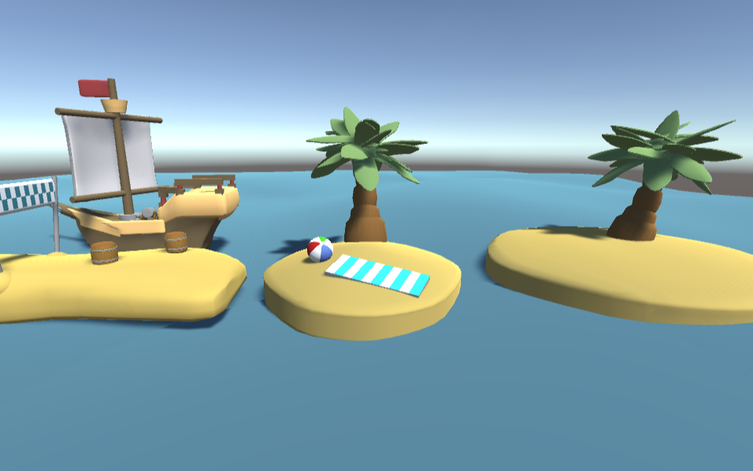
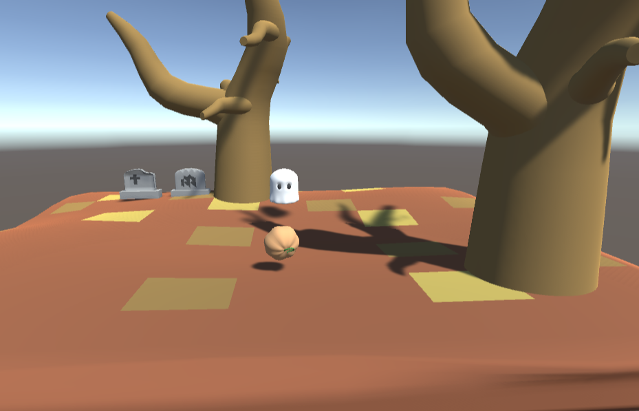

This is a physics-based marble platformer featuring distinct season themed environments.
I focused on creating a good game by balancing marble momentum with high-stakes hazards. Key technical
implementations include a custom physics-interaction system for roaming obstacles and a projectile-based enemies.
To add depth to the game, I designed a specialized pulse ability, allowing players to
strategically avoid enemies and clear paths through the levels.